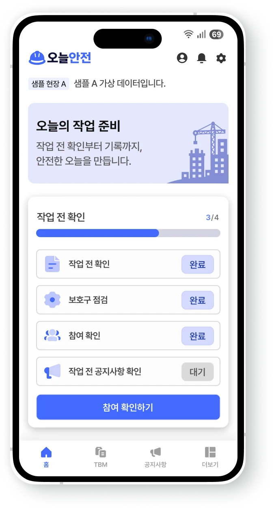
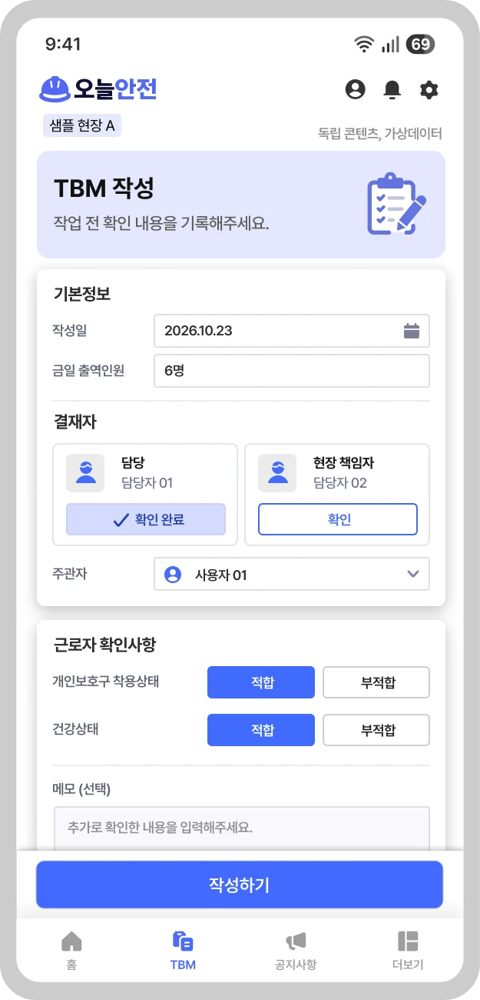
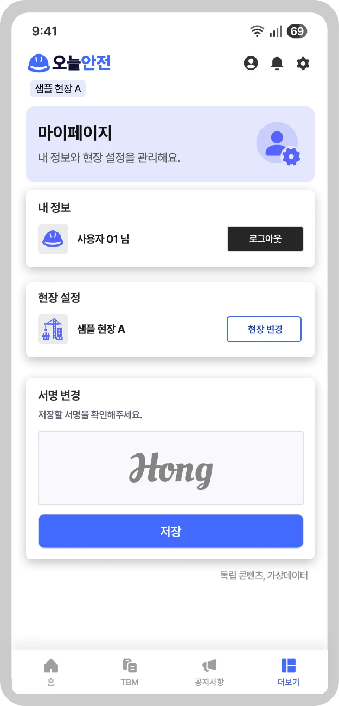
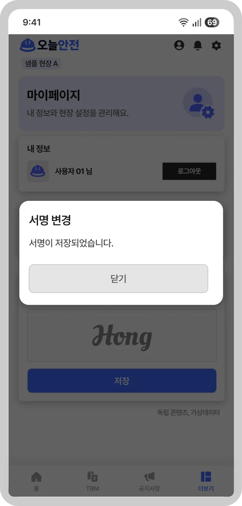
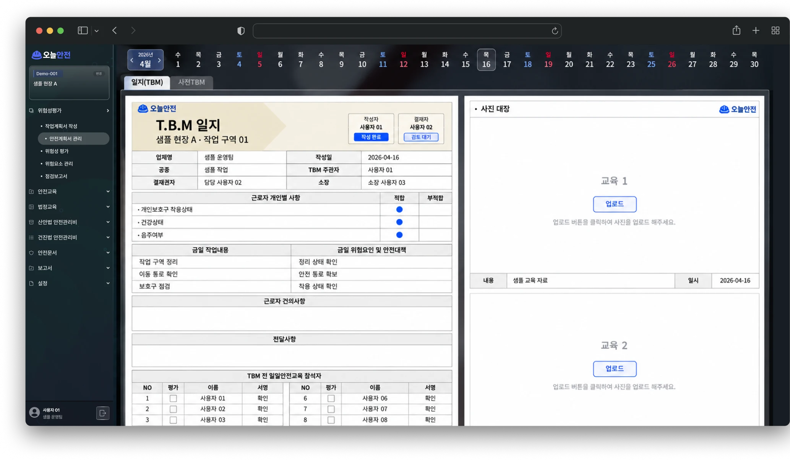
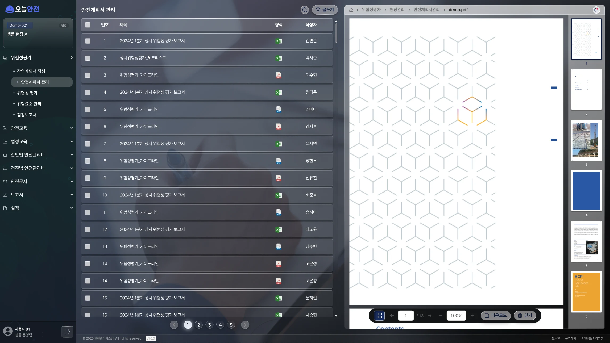

02 모바일 일지 설계
일지의 작성 맥락과 확인 상태, 서명 저장 결과를 구분했습니다.
01
작성 맥락
설계 내용작성일과 금일 출역 인원을 일지 상단에서 확인하도록 배치했습니다.
02
확인 상태와 작성 진입
설계 내용담당·현장 책임자 확인 상태와 근로자 확인 항목, 작성하기 버튼을 구분했습니다.
03
서명 저장 결과
설계 내용마이페이지에서 서명을 입력·변경하고 저장 후 완료 메시지를 표시했습니다.
PROJECT 01 · B2B WORKFLOW · WEB / MOBILE
PC UI 디자인·퍼블리싱과 모바일 UI 디자인을 맡았습니다. 팀장을 통해 전달된 자료 열람 요청을 바탕으로 파일 열람 UI를 설계했습니다. 공개 이미지는 설명용으로 재구성한 화면과 가상 데이터를 사용합니다.
"종이 일지를 웹·모바일 입력으로 전환 · 20명+ 월 20일+ 사용 · 작성 시간 약 20% 단축"

CASE AT A GLANCE
메인·일지·서명 등 주요 화면 UI · PC 퍼블리싱 · 파일 열람 UI
01 프로젝트 배경
웹의 기록 입력·보관과 모바일 현장 작성을 함께 다뤘습니다. 이후 현장의 열람 개선 요청을 팀장을 통해 전달받고, 서비스 안에서 관련 파일을 확인하도록 설계했습니다.
02 모바일 일지 설계
작성일과 금일 출역 인원을 일지 상단에서 확인하도록 배치했습니다.
담당·현장 책임자 확인 상태와 근로자 확인 항목, 작성하기 버튼을 구분했습니다.
마이페이지에서 서명을 입력·변경하고 저장 후 완료 메시지를 표시했습니다.
03 일지 확인과 작성 진입

서명 입력과 저장 확인



04 추가 요청과 웹 기능 확장

사용 규모와 작성 시간 변화는 운영 중 현장 의견을 기준으로 정리했습니다. 모바일 퍼블리싱은 일정상 별도 담당자가 진행했습니다.
05 회고
추가 요청을 반영하며 모바일의 현장 작성과 웹의 자료 확인을 나누어 설계했습니다.
서명 미입력·저장 실패와 현장 작성 중단을 실제 과업에서 확인하고 싶습니다.